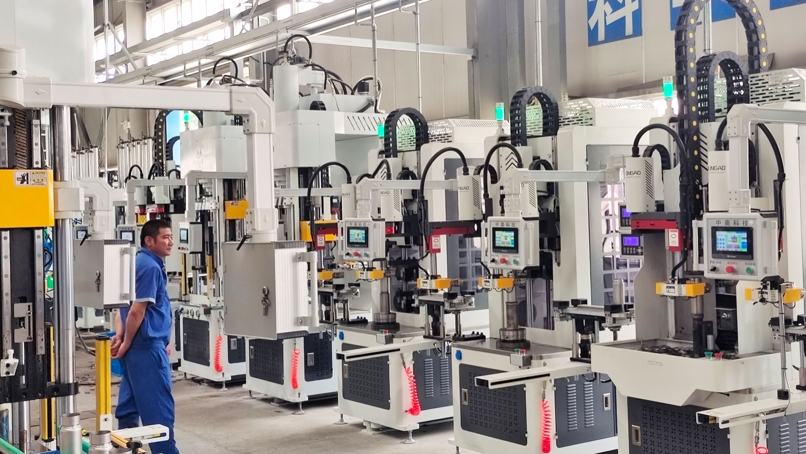
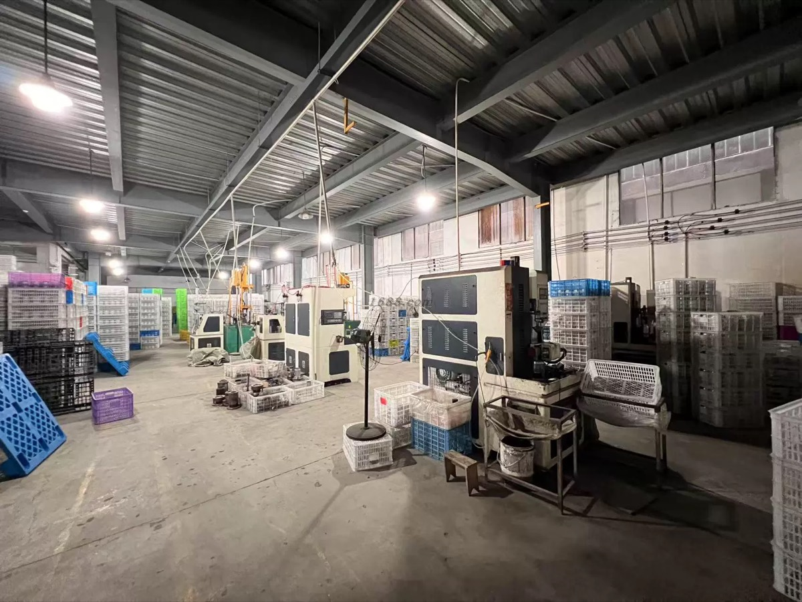
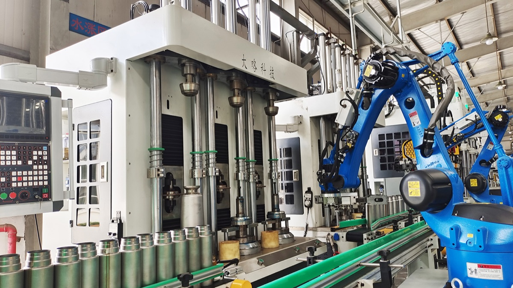

Supply Chain Role
HDS helps buyers connect product demand with suitable drinkware production resources. The team compares product type, material, capacity, lid, surface finish, logo method, packaging and order quantity before recommending a path.
HDS Drinkware
HDS coordinates factory and supply chain resources for custom drinkware projects, including product matching, sampling, production follow-up, packaging and shipping support.



HDS helps buyers connect product demand with suitable drinkware production resources. The team compares product type, material, capacity, lid, surface finish, logo method, packaging and order quantity before recommending a path.
Production coordination covers sample confirmation, logo placement, color and finish discussion, packaging details, carton marks and order follow-up. This is especially important for buyers who need repeat orders rather than a one-time sample.
Buyers can review product photos, workshop photos, packaging photos and sample proof before moving forward. For important orders, HDS recommends confirming a sample or logo sample before bulk production.
The supply chain is best suited for custom tumblers, stainless steel cups, plastic water bottles, sports bottles, coffee cups, promotional drinkware and gift packaging projects with clear B2B requirements.
Before you contact HDS
Clear product, logo, packaging and shipping information helps the team reply with a practical path instead of a generic answer.
Send your product photo, quantity, logo requirement, packaging request and target market.